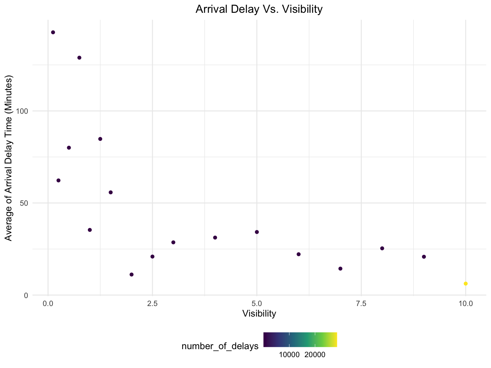
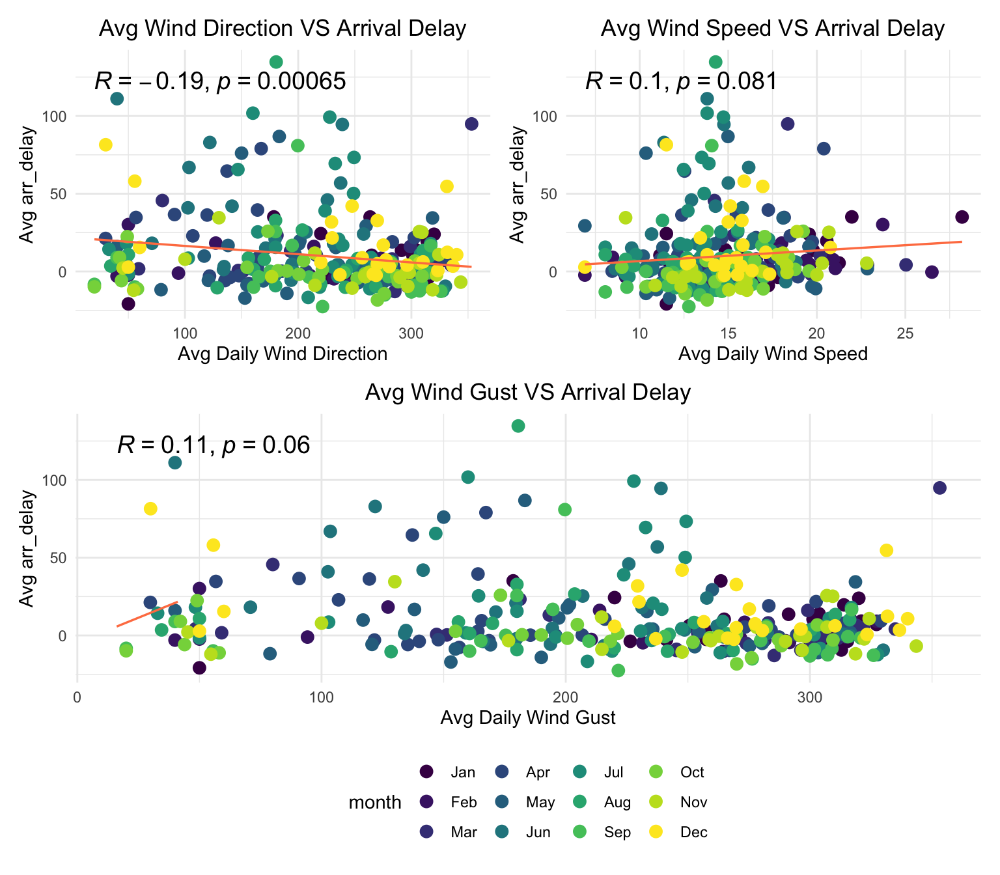
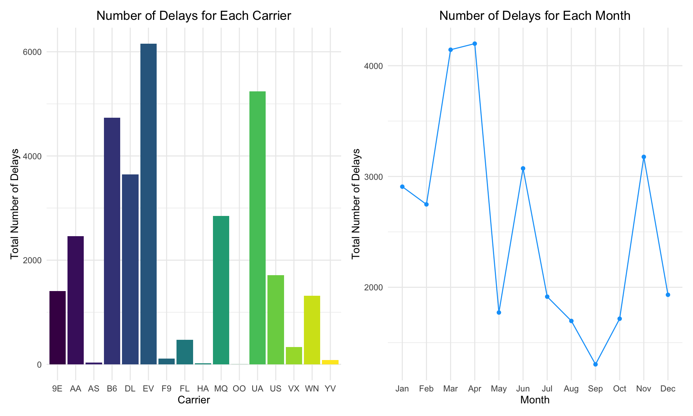
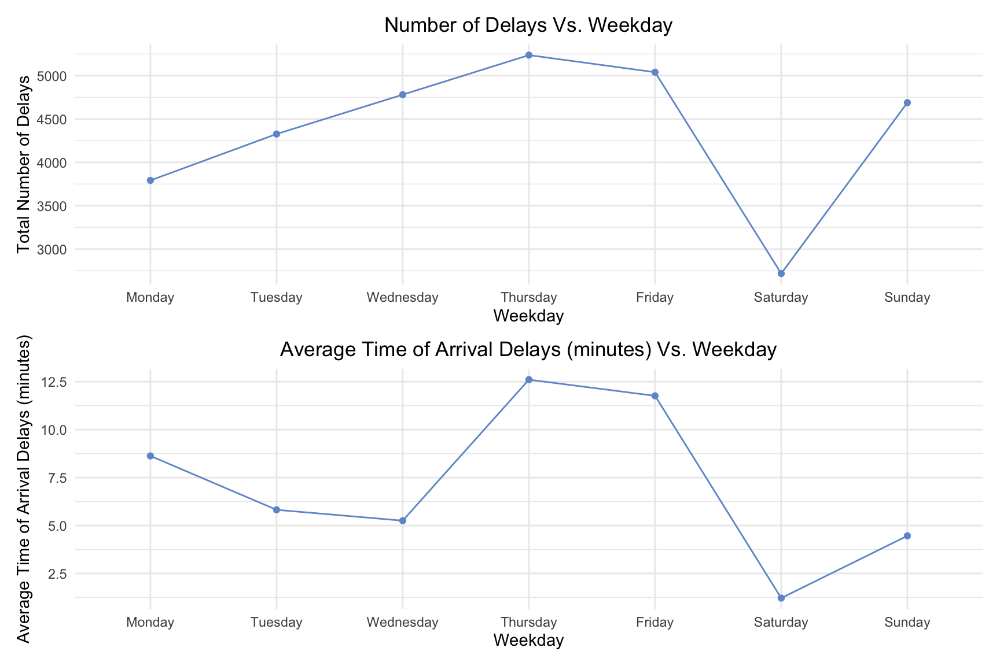
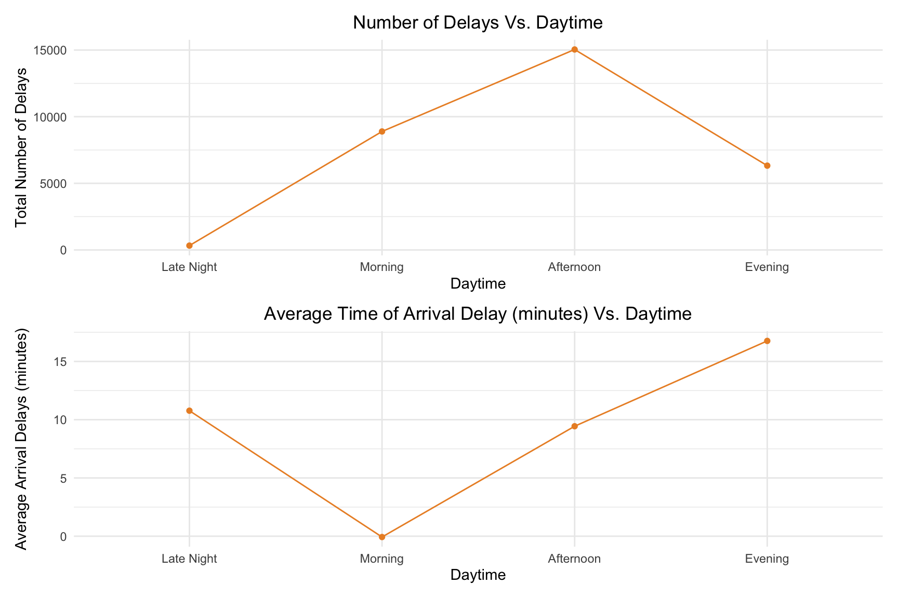

Exploratory Data Analysis
Visualization
To provide an overall view of the distribution in arrival delay (in
minutes), we created a histogram for the arrival delay in 2013, a
barplot showing the arrival status categorized by three NYC departure
airports (LGA, JFK, EWR) and a
boxplot below displaying the top 6 average arrival delay grouped by
destinations. Additionally, we then visualized the correlation between
arrival delay and weather features (e.g.,pressure,
wind, visibility, etc.) and some other
external factors including flight carriers,
month and specific datetime features.
Note: All visualization parts were performed on data consisting of flight and weather information in 2013. Data in 2017 was reserved for testing purpose only.
library(tidyr)
library(tidyverse)
library(rvest)
library(dplyr)
library(cowplot)
library(gridExtra)
library(RColorBrewer)
library(plotly)
library(corrplot)
library(ggpubr)
library(viridisLite)
library(patchwork)
knitr::opts_chunk$set(
echo = TRUE,
warning = FALSE,
fig.width = 8,
fig.height = 6,
out.width = "90%"
)
theme_set(theme_minimal() +
theme(legend.position = "bottom",
plot.title= element_text(hjust = 0.5))
)
options(
ggplot2.continuous.colour = "viridis",
ggplot2.continuous.fill = "viridis"
)
scale_colour_discrete = scale_colour_viridis_d
scale_fill_discrete = scale_fill_viridis_d
## Load dataset
df_2013 =
read_csv("data/merge_data_2013.csv", show_col_types = FALSE)
# Convert month to factor with levels in ascending order and labels as month abbreviations
df_2013$month <- factor(df_2013$month, levels = 1:12, labels = month.abb[1:12])
df_2013 <- df_2013 %>%
mutate(date = paste(month, day, sep = "_"))
average_delay_by_date <- df_2013 %>%
# group_by(date) %>%
group_by(month, date) %>%
summarise(
avg_arr_delay = mean(arr_delay, na.rm = TRUE),
avg_precip = mean(precip, na.rm = TRUE),
avg_wind_dir = mean(wind_dir, na.rm = TRUE),
avg_wind_speed = mean(wind_speed, na.rm = TRUE),
avg_wind_gust = mean(wind_gust, na.rm = TRUE),
avg_pressure = mean(pressure, na.rm = TRUE),
avg_visib = mean(visib, na.rm = TRUE)
)
# Aggregate the data by month and calculate averages
df_2013_avg <- df_2013 %>%
group_by(month) %>%
summarize(
avg_arr_delay = mean(arr_delay, na.rm = TRUE),
avg_precip = mean(precip, na.rm = TRUE),
avg_wind_dir = mean(wind_dir, na.rm = TRUE),
avg_wind_speed = mean(wind_speed, na.rm = TRUE),
avg_wind_gust = mean(wind_gust, na.rm = TRUE),
avg_pressure = mean(pressure, na.rm = TRUE),
avg_visib = mean(visib, na.rm = TRUE)
)Arrival Delay Summary
dd_hist =
ggplot(data = df_2013, aes(x = arr_delay)) +
geom_histogram(fill = 'skyblue', color = 'black')+
labs(title = "Distribution of Arrival Delay",
x = "Arrival Delay (minutes)",
y = "Frequency")
origin_delay = df_2013 |>
mutate(
arrival_type = ifelse(arr_delay <= 0, "on time", "delayed")) |>
ggplot(aes(x = origin, fill = arrival_type)) +
geom_bar()+
scale_fill_brewer(palette = "Set3") +
labs(title = "Arrival Status Depatured from NYC Airports",
x = "Origin",
y = "Counts")
# Calculate average arrival delay by destination
avg_arr_delay_by_dest <- df_2013 %>%
group_by(dest) %>%
summarize(avg_arr_delay_dest = mean(arr_delay, na.rm = TRUE)) %>%
arrange(desc(avg_arr_delay_dest)) %>%
head(6)
# Select only the top 6 destinations
top_destinations <- avg_arr_delay_by_dest$dest
# Filter the data for the top 6 destinations
filtered_data <- df_2013 %>% filter(dest %in% top_destinations)
# Create a boxplot for the top 6 destinations
top6_dest =
ggplot(filtered_data, aes(x = reorder(dest, -arr_delay), y = arr_delay, fill = dest)) +
geom_boxplot() +
scale_fill_brewer(palette = "Set3") +
labs(title = "Arrival Delay for Top 6 Destinations",
x = "Destination",
y = "Arrival Delay (minutes)")
dd_hist | origin_delay / top6_dest
df_2013 |>
summarise(min_delay = min(arr_delay),
avg_delay = mean(arr_delay),
median_delay = median(arr_delay),
max_delay = max(arr_delay)
) |>
knitr::kable(
digits = 3,
col.names = c("Min Delay Time (Minutes)","Average Delay Time (Minutes)", "Median Delay Time (Minutes)",
"Max Delay Time (Minutes)")
)| Min Delay Time (Minutes) | Average Delay Time (Minutes) | Median Delay Time (Minutes) | Max Delay Time (Minutes) |
|---|---|---|---|
| -74 | 7.287 | -4 | 783 |
df_2013 |>
mutate(
arrival_type = ifelse(arr_delay <= 0, "on time", "delayed")) |>
group_by(arrival_type) |>
summarise(count = n(),
average_delay_time = mean(arr_delay)) |>
knitr::kable(
digits = 3,
col.names = c("Arrival Type", "Count", "Average Delay Time (minutes)")
)| Arrival Type | Count | Average Delay Time (minutes) |
|---|---|---|
| delayed | 30584 | 38.163 |
| on time | 42150 | -15.117 |
The overall distribution of arrival delay was highly skewed to the right, with the average delay time 7.28 minutes. Based on the barplot of arrival delay grouped by origins, we found that EWR had the highest portion of delays in respect to its total flights, and JFK had the the lowest number of delays.Based on the boxplot displaying average time of arrival delay, we did not perceive any major differences regarding arrival delay time under the top 6 destinations.Approximately 58% of records (n=42,150) in the dataset were reported as on-time, and among them, the average time in earlier arrival was 15 minutes. On the contrary, in the delay group, the delay time was calculated to be 38 minutes on average.
Correlation Plot
df_2013 = read.csv("data/merge_data_2013.csv") |>
mutate(month = factor(month, levels = 1:12, labels = month.abb[1:12]))
df_corr = df_2013 |>
select(-year,-flight, -day, -minute, -hour) |>
select_if( is.numeric)
corrplot(cor(df_corr), type="upper", order="hclust",
col=brewer.pal(n=8, name="RdYlBu"))
The correlation heatmap plot depicted some highly correlated pair of
features such as wind_speed and precip, and
air_time and distance. Thus, in the modeling
process, we will only keep one variable for each pair to avoid the
multicollinearity issue. In this case, we removed features
wind speed and distance when constructing the
model.
Arrival Delay & Weather Factors
Pressure
# Average pressure against average arr_delay by month
pressure_delay_date =
ggplot(average_delay_by_date, aes(x = avg_pressure, y = avg_arr_delay)) +
geom_point(size = 3, aes(x = avg_pressure, y = avg_arr_delay, color = month)) +
geom_smooth(method = "lm", se = FALSE, color = "coral", size = 0.6) +
stat_cor(method = "pearson", label.x = 1020, label.y = -30, size = 5) +
labs(title = "Scatter Plot of Average Pressure against Arrival Delay by Date",
x = "Avg Pressure by Date",
y = "Avg Arrival Delay (minutes)")
pressure_delay_date
The correlation coefficient was -0.26 suggesting a weak negative correlation between pressure (mmhg) and arrival delay in minutes. While the p-value is significantly small, it may be driven by a large sample size (n=72,734).
Visibility
df_2013 |>
group_by(visib) |>
mutate(count_delay = if_else(arr_delay>0 , 1, 0)) |>
summarise(avg_delay = mean(arr_delay),
number_of_delays = sum(count_delay)
) |>
ggplot(aes(x=visib,
y=avg_delay, color=number_of_delays))+
geom_point() +
labs(title = "Arrival Delay Vs. Visibility",
x = "Visibility",
y = "Average of Arrival Delay Time (Minutes)") 
Based on the graph, it appeared that the incremental of visibility did not linearly correlate with the reduction in the number of delays. In the highest visibility 10, we perceived the highest number of delays. There was no major difference in the number of delays in visibility ranging from 0 to 9. However, we observed that visibility negatively correlated with average delay time in minutes.
Wind
# Average Wind Direction against average arr_delay by date
wind_dir_delay_date =
ggplot(average_delay_by_date, aes(x = avg_wind_dir, y = avg_arr_delay, color = month)) +
geom_point(size = 3) +
geom_smooth(method = "lm", se = FALSE, color = "coral", size = 0.6) +
guides(color = 'none') +
labs(title = "Avg Wind Direction VS Arrival Delay",
x = "Avg Daily Wind Direction",
y = "Avg arr_delay")
# Average wind_gust against average arr_delay by date
wind_gust_delay_date =
ggplot(average_delay_by_date, aes(x = avg_wind_gust, y = avg_arr_delay, color = month)) +
geom_point(size = 3) +
geom_smooth(method = "lm", se = FALSE, color = "coral", size = 0.6) +
labs(title = "Avg Wind Gust VS Arrival Delay",
x = "Avg Daily Wind Gust",
y = "Avg arr_delay")
# Average wind_speed against average arr_delay by date
wind_speed_delay_date =
ggplot(average_delay_by_date, aes(x = avg_wind_speed, y = avg_arr_delay, color = month)) +
geom_point(size = 3) +
geom_smooth(method = "lm", se = FALSE, color = "coral", size = 0.6) +
guides(color = 'none') +
labs(title = "Avg Wind Speed VS Arrival Delay",
x = "Avg Daily Wind Speed",
y = "Avg arr_delay")
(wind_dir_delay_date | wind_speed_delay_date) / wind_gust_delay_date
Arrival Delay & Carriers, Temporal Factors
carrier_plot = df_2013 |>
group_by(carrier) |>
mutate(delay_count = if_else(arr_delay >0 , 1, 0)) |>
summarise(delay_count = sum(delay_count)) |>
ggplot(aes(x = carrier,
y = delay_count)) +
geom_bar(stat = "identity", fill = viridis(16)) +
labs(title = "Number of Delays for Each Carrier",
x = "Carrier",
y = "Total Number of Delays")
month_plot = df_2013 |>
group_by(month) |>
mutate(delay_count = if_else(arr_delay >0 , 1, 0)) |>
summarise(delay_count = sum(delay_count)) |>
ggplot(aes(x = month,
y = delay_count, group=1)) +
geom_point(color="#0aa2fa") +
geom_line(color="#0aa2fa") +
labs(title = "Number of Delays for Each Month",
x = "Month",
y = "Total Number of Delays")
carrier_plot | month_plot
The carrier EV was shown to have the highest number of
delays, followed by carrier B6. The number of delays for
carrier HA was found to be the lowest across all carriers.
Months such as March and April appeared to have the relatively high
number of delays, and the lowest total number of delays occurred in
September.
df_2013_weekday = read_csv("data/merge_data_2013.csv") |>
mutate(delay_count = if_else(arr_delay >0 , 1, 0),
arrival_date = paste(year,"-",month,"-",day, sep = "")
) |>
mutate(week_date = weekdays(date(arrival_date)),
week_date = factor(week_date,
levels = c("Monday", "Tuesday", "Wednesday",
"Thursday", "Friday", "Saturday",
"Sunday"))
)
weekday_plot = df_2013_weekday |>
group_by(week_date) |>
summarise(delay_count = sum(delay_count)) |>
ggplot(aes(x = week_date,
y = delay_count, group=1)) +
geom_point(color="#6f98d1") +
geom_line(color="#6f98d1") +
labs(title = "Number of Delays Vs. Weekday",
x = "Weekday",
y = "Total Number of Delays")
weekday_plot_delay = df_2013_weekday |>
group_by(week_date) |>
summarise(avg_delay = mean(arr_delay)) |>
ggplot(aes(x = week_date,
y = avg_delay, group=1)) +
geom_point(color="#6f98d1") +
geom_line(color="#6f98d1") +
labs(title = "Average Time of Arrival Delays (minutes) Vs. Weekday",
x = "Weekday",
y = "Average Time of Arrival Delays (minutes)")
weekday_plot /weekday_plot_delay
An increasing trend in the number of delays was perceived from Monday to Thursday, followed by a decline on Friday and Saturday. Based on the figures, Saturday had the lowest number of delays and average time of arrival delays. It was also noted that Thursday was found to have the highest number of delays and average time of arrival delays in minutes.
part_day_plot = df_2013 |>
mutate(hour = cut(hour,
breaks = c(-Inf, 5, 12, 17, 21, Inf),
labels = c("Late Night", "Morning", "Afternoon", "Evening", "Late Night"),
include.lowest = TRUE
)) |>
group_by(hour) |>
mutate(delay_count = if_else(arr_delay >0 , 1, 0)) |>
summarise(delay_count = sum(delay_count),
avg_delay = mean(arr_delay)) |>
ggplot(aes(x = hour,
y = delay_count, group=1)) +
geom_point(color="#eb8f2d") +
geom_line(color="#eb8f2d") +
labs(title = "Number of Delays Vs. Daytime",
x = "Daytime",
y = "Total Number of Delays")
part_day_plot_delay = df_2013 |>
mutate(hour = cut(hour,
breaks = c(-Inf, 5, 12, 17, 21, Inf),
labels = c("Late Night", "Morning", "Afternoon", "Evening", "Late Night"),
include.lowest = TRUE
)) |>
group_by(hour) |>
mutate(delay_count = if_else(arr_delay >0 , 1, 0)) |>
summarise(avg_delay = mean(arr_delay)) |>
ggplot(aes(x = hour,
y = avg_delay, group=1)) +
geom_point(color="#eb8f2d") +
geom_line(color="#eb8f2d") +
labs(title = "Average Time of Arrival Delay (minutes) Vs. Daytime",
x = "Daytime",
y = "Average Arrival Delays (minutes)")
part_day_plot / part_day_plot_delay
Furthermore, we further visualized the changes of number of delays
and daytime divided into Late Night, Morning,
Afternoon, Evening. The number of arrival
delays was increased from time during laye night to afternoon, dropping
during the evening. We found a largest number of delays during
afternoon, with the average time delay of 9 minutes.
Insights from Visualization
Based on above visualizations, we anticipated weather factors such as pressure,visibility and wind conditions can be beneficial in predicting flight delay task. Additionally, other features such as information about flight carrier and temporarily are believed to helpful in such prediction task as well. Thus, in the subsequent sections, we would further quantity their correlations by leveraging multiple linear regression.